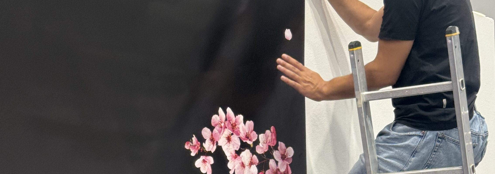
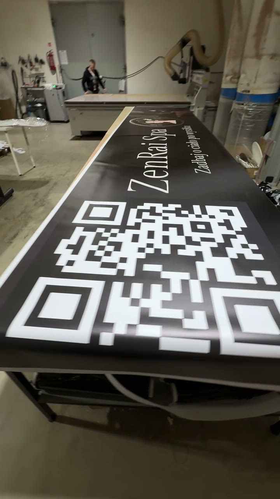
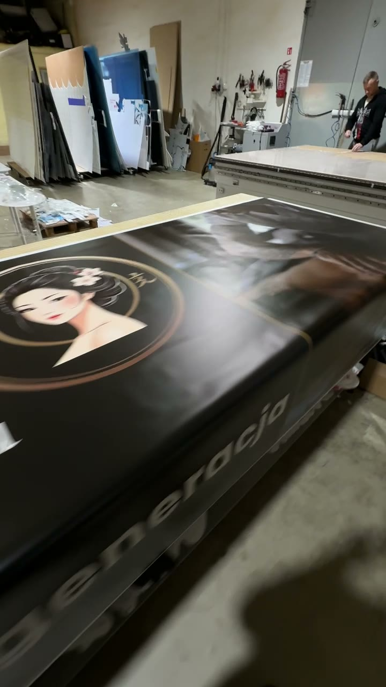
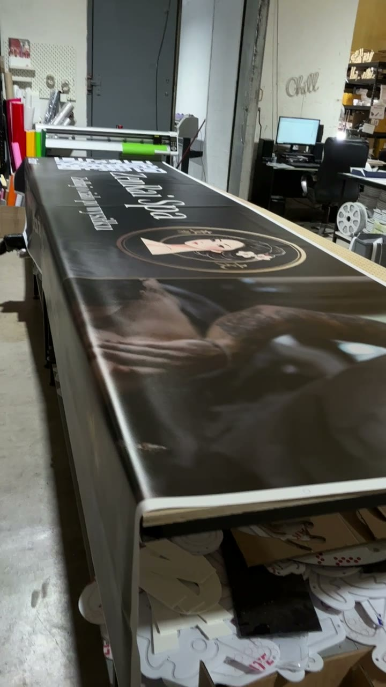
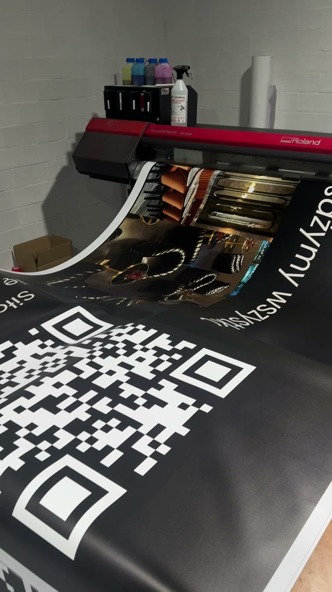
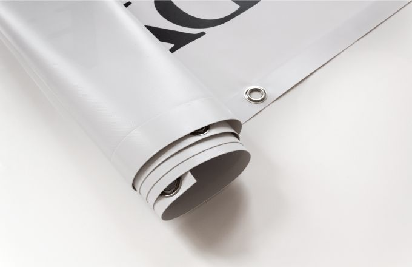
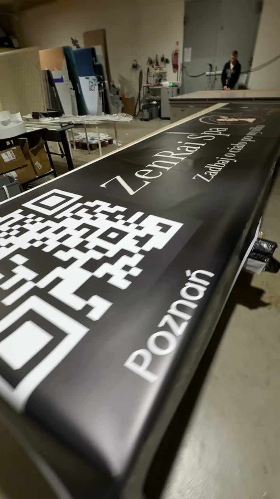

Banery reklamowe na wymiar –
druk, projektowanie i montaż
NEOFOX – banery reklamowe na wymiar, druk wielkoformatowy, banery oczkowane, projektowanie, wysyłka i montaż w Poznaniu oraz całej Polsce
Profesjonalny druk banerów reklamowych
Profesjonalny druk banerów reklamowych do zastosowań wewnętrznych i zewnętrznych. Produkujemy banery na wymiar, przygotowujemy projekty graficzne, wykonujemy wykończenia montażowe oraz organizujemy wysyłkę i montaż na terenie Polski.
Ważne: w jednym kawałku drukujemy banery o szerokości do 160 cm i długości dobieranej do zamówienia oraz możliwości technologicznych. Większe reklamy mogą wymagać podziału na części i indywidualnego uzgodnienia łączenia.





Banery reklamowe drukowane na indywidualny wymiar
Wykonujemy banery poziome, pionowe i w nietypowych proporcjach: na ogrodzenia, elewacje, bramy, stelaże, witryny, wydarzenia, targi i do wnętrz. Format, materiał i wykończenie dobieramy do miejsca ekspozycji. Maksymalna szerokość pojedynczego wydruku wynosi 160 cm; nie jest to ograniczenie długości reklamy.
Banery Frontlit – klasyczna reklama zewnętrzna
Banery Frontlit to elastyczne materiały z poliestrowym wzmocnieniem i powłoką PVC, przeznaczone do zadruku jednostronnego. Sprawdzają się na płotach, ogrodzeniach, ścianach i konstrukcjach reklamowych. Dobieramy wariant ekonomiczny lub mocniejszy zależnie od czasu ekspozycji i warunków montażu.
Banery laminowane i powlekane – czym się różnią?
Frontlit laminowany to ekonomiczny materiał popularny przy kampaniach sezonowych i standardowych zastosowaniach. Frontlit powlekany jest rozwiązaniem stosowanym przy bardziej wymagających ekspozycjach. Dostępne na rynku gramatury obejmują m.in. około 440–510 g/m² i inne warianty; konkretny materiał oraz jego parametry potwierdzamy przed produkcją.
-
Lekkie banery i materiały plakatowe do wnętrz
Do krótkotrwałych ekspozycji wewnętrznych można zastosować lżejsze materiały reklamowe, w tym podłoża o charakterze papierowym. Materiał plakatowy nie jest tym samym co klasyczny baner PVC i nie powinien być automatycznie traktowany jako rozwiązanie do długiej ekspozycji zewnętrznej. Dobieramy podłoże do przeznaczenia reklamy.
-
Banery zewnętrzne odporne na warunki atmosferyczne
Do reklam na zewnątrz dobieramy podłoża i druk odpowiednie do ekspozycji na słońce, deszcz i zmiany temperatury. Trwałość zależy od materiału, intensywności promieniowania UV, warunków wiatrowych oraz sposobu zamocowania. Pomagamy dobrać rodzaj banera do planowanego okresu użytkowania.
-
Siatka Mesh – banery perforowane
Siatka banerowa Mesh ma drobne otwory, które częściowo przepuszczają powietrze i zmniejszają napór wiatru w porównaniu z pełnym banerem PVC. Jest popularna na rusztowaniach i większych powierzchniach. Możliwość wykonania na konkretnym materiale i warunki realizacji potwierdzamy indywidualnie.
-
Materiały specjalistyczne – dodatkowe możliwości
W branży stosuje się również Blockout ograniczający prześwitywanie, Backlit do reklam podświetlanych od tyłu oraz materiały tekstylne do ekspozycji wystawienniczych. Są to warianty rynkowe, które możemy omówić przy wycenie; ich dostępność w konkretnej technologii NEOFOX wymaga potwierdzenia.
Druk wielkoformatowy – kolory, zdjęcia i logo
Drukujemy projekty pełnokolorowe: logotypy, fotografie, grafiki promocyjne, hasła, dane kontaktowe, kody QR i oznaczenia informacyjne. Zwracamy uwagę na czytelność napisów z planowanej odległości, kontrast oraz właściwe przygotowanie plików do druku.

Oczkowanie banerów – rozstaw oczek dopasowany do montażu
Banery mogą zostać wyposażone w metalowe oczka montażowe (luwersy), przez które przeprowadza się linki, opaski zaciskowe, gumy napinające lub inne mocowania. Najpopularniejszy na rynku jest rozstaw co 50 cm, jednak w zależności od formatu i miejsca ekspozycji można dobrać także inne odstępy.
| Rozstaw oczek | Przykładowe zastosowanie |
|---|---|
| Co 25 cm | Gęstsze mocowanie, większe formaty, bardziej odsłonięte miejsca |
| Co 30 cm | Gęstszy rozstaw i równomierne napinanie krawędzi |
| Co 40 cm | Wariant pośredni, dopasowanie do konstrukcji lub ogrodzenia |
| Co 50 cm | Najczęściej spotykany standard w typowych banerach |
| Co 100 cm | Rzadsze oczkowanie, wyłącznie gdy pozwalają na to warunki montażu |
| Indywidualnie | Inny rozstaw, tylko wybrane krawędzie, same narożniki lub bez oczek |
Rozstaw oczek ustalamy na etapie zamówienia. Przy dużej powierzchni i silnym wietrze znaczenie mają także wzmocnienie krawędzi, rodzaj podłoża i właściwie zaprojektowana konstrukcja. Gęstsze oczkowanie samo w sobie nie zastępuje oceny warunków montażowych.

Wykończenie banerów – zgrzew, podwinięcie, tunele
W zależności od rodzaju materiału i uzgodnionej technologii można zastosować docięcie do wymiaru, wzmocnienie lub zgrzew krawędzi, oczkowanie oraz tunele do wprowadzenia rurki, listwy czy linki. Baner bez oczek może być odpowiedni do określonych systemów ramowych. Dostępność konkretnego wykończenia potwierdzamy przed realizacją.
Banery reklamowe z logo, grafiką i kodem QR
Wykonujemy banery firmowe, sprzedażowe, promocyjne, informacyjne, na otwarcie lokalu, na budowę, na targi i eventy. Możemy umieścić logo, numer telefonu, adres strony, kod QR, zdjęcia produktów oraz dowolne hasło reklamowe.

Projektowanie banerów od podstaw
Nie masz projektu? Biuro projektowe NEOFOX może przygotować grafikę od zera na podstawie przesłanych materiałów, identyfikacji wizualnej i treści. Możemy również dostosować istniejący plik do druku: poprawić format, układ, marginesy i rozdzielczość. Projektowanie wyceniamy indywidualnie.
Banery z wysyłką na terenie Polski
Gotowe banery przygotowujemy do wysyłki pod wskazany adres. Pakowanie i sposób dostawy dobieramy do formatu, materiału i wykończenia. Koszt i termin transportu potwierdzamy podczas wyceny.
Montaż banerów reklamowych przez NEOFOX
Oferujemy dodatkowo płatny montaż banerów na ogrodzeniach, elewacjach, ścianach i konstrukcjach reklamowych. Ekipa NEOFOX realizuje usługi w Poznaniu, Wielkopolsce i na terenie całej Polski. Transport, dojazd, montaż i ewentualny sprzęt specjalistyczny wyceniamy oddzielnie – nie są wliczone w cenę samego banera.
Jak dobrać odpowiedni baner reklamowy?
Przed zamówieniem warto określić: miejsce ekspozycji (wewnątrz lub na zewnątrz), format, planowany czas użytkowania, narażenie na wiatr, rodzaj konstrukcji, potrzebę oczkowania, zgrzewu lub tuneli oraz odległość, z jakiej grafika będzie oglądana. Pomożemy dobrać właściwe rozwiązanie.
Jak zamówić baner na wymiar?
Do wyceny prześlij:
- /1 szerokość i wysokość
- /2 liczbę sztuk
- /3 miejsce ekspozycji
- /4 preferowany materiał lub oczekiwaną trwałość
- /5 rodzaj wykończenia i rozstaw oczek
- /6 projekt albo informację o potrzebie projektowania
- /7 adres wysyłki lub montażu
- /8 oczekiwany termin
FAQ – najczęściej zadawane pytania
Zapytaj o swój projektJaka jest maksymalna szerokość banera w jednym kawałku?
Do 160 cm szerokości. Długość dobieramy do zamówienia i możliwości produkcyjnych.
Co ile centymetrów wykonuje się oczka?
Najczęściej co 50 cm; spotykane są także rozstawy 25, 30, 40 i 100 cm oraz rozwiązania indywidualne.
Czy baner można zamówić bez oczek?
Taką opcję można uzgodnić, jeśli odpowiada ona planowanemu sposobowi montażu.
Czy wykonujecie banery do wnętrz i na zewnątrz?
Tak, dobieramy materiał odpowiednio do miejsca ekspozycji.
Czy można zamówić projekt graficzny?
Tak, wykonujemy projekt od podstaw lub dostosowujemy dostarczony plik.
Czy oferujecie wysyłkę i montaż?
Tak. Wysyłkę i montaż ustalamy i wyceniamy indywidualnie.
Zamów baner reklamowy w NEOFOX
Prześlij wymiary, projekt lub opis grafiki, miejsce ekspozycji i preferowany sposób wykończenia. Przygotujemy indywidualną ofertę na druk banera, projektowanie, wysyłkę lub montaż.
+48 730 627 143